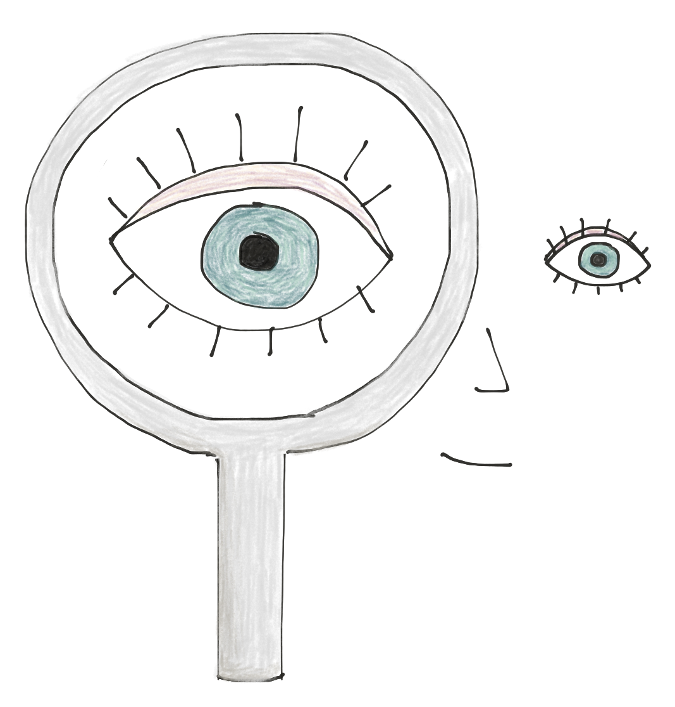
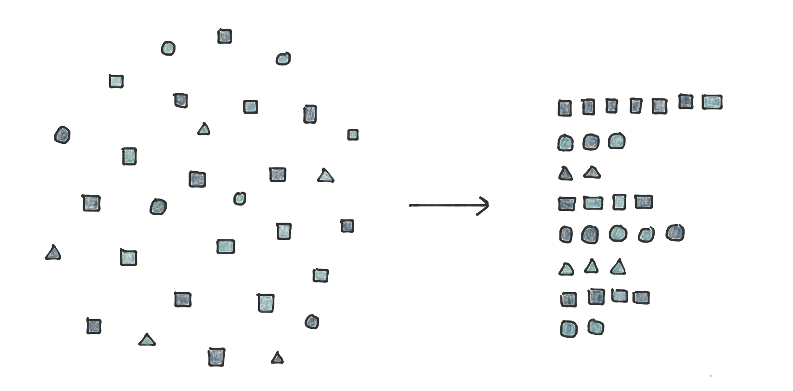
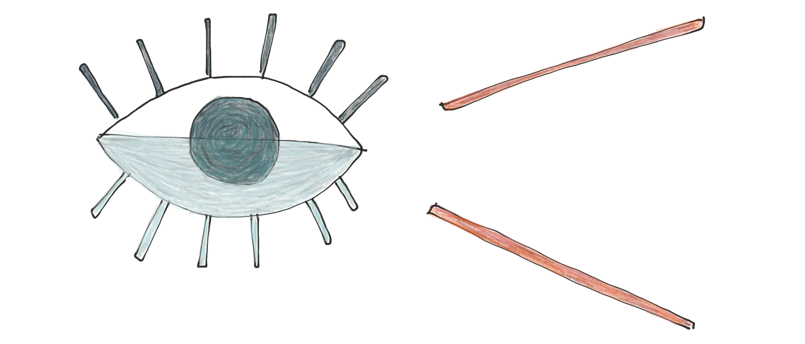
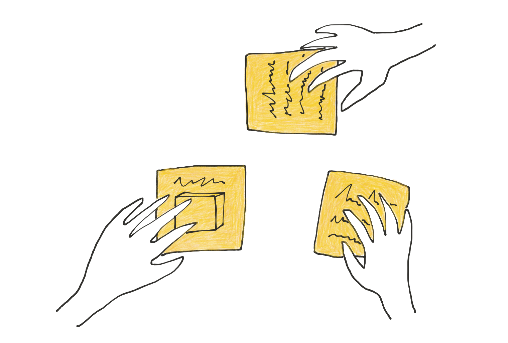
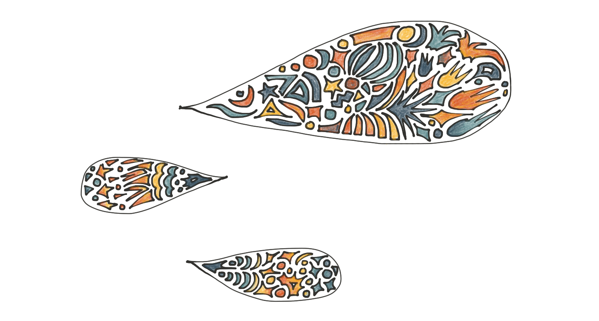
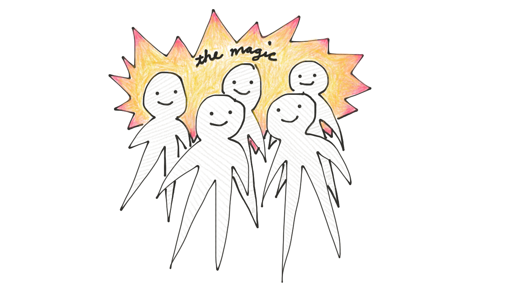
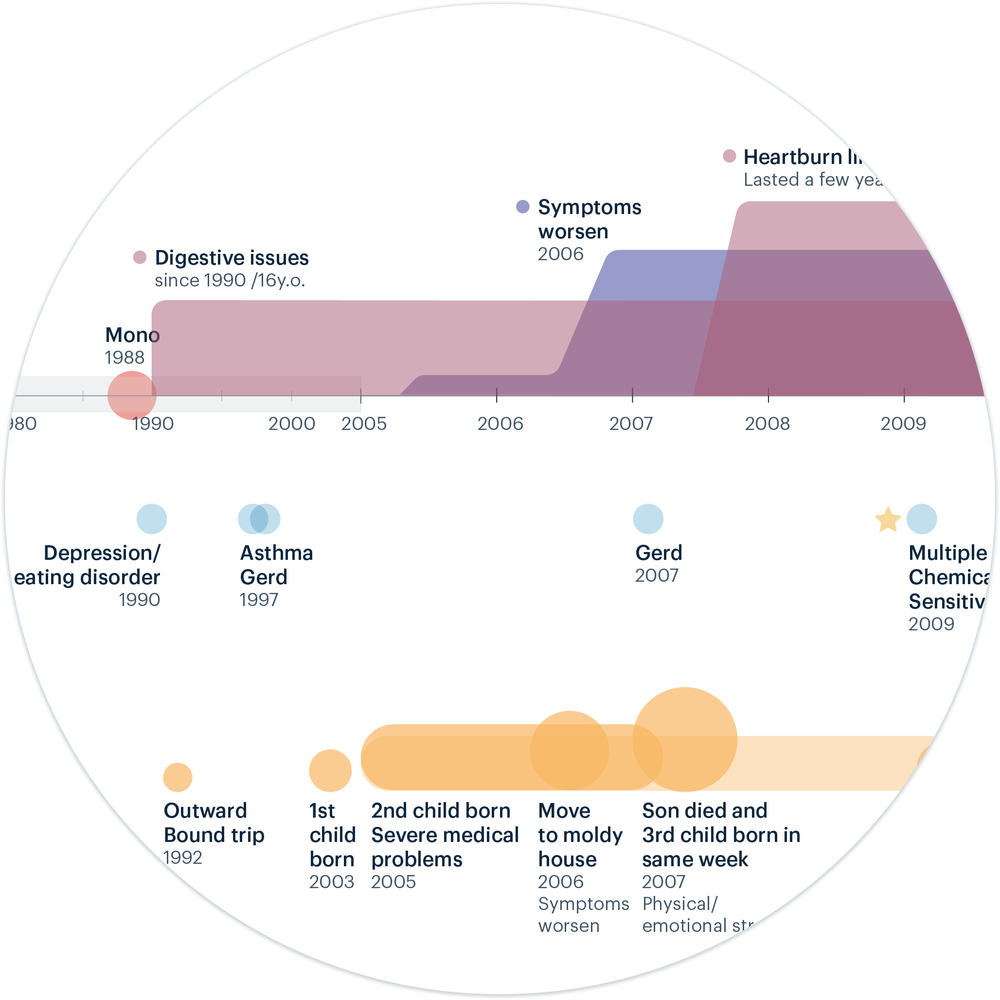
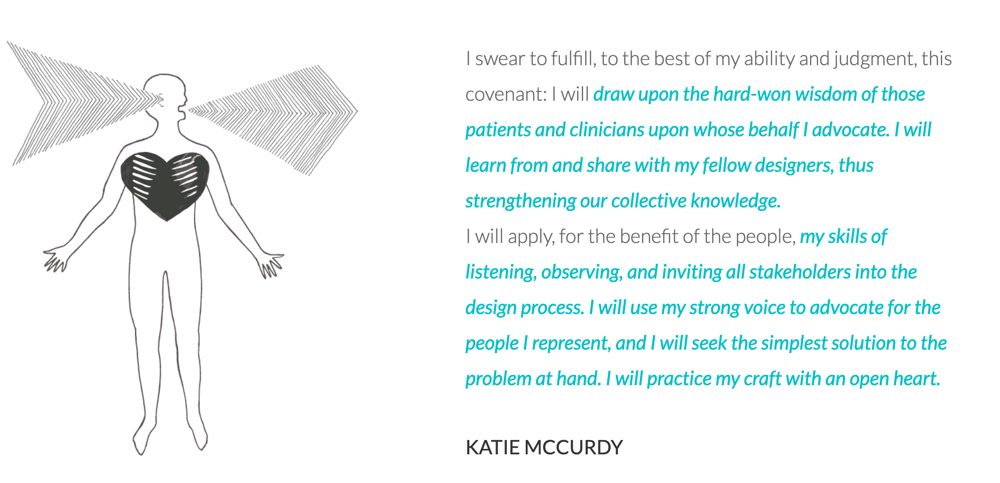
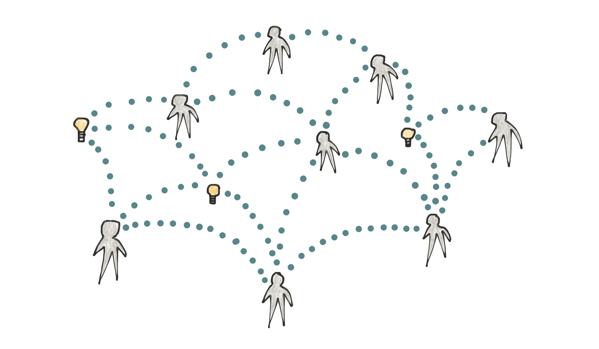
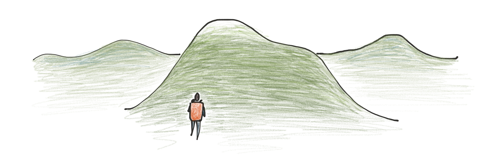

I’m a research-oriented designer who loves to
simplify the complex, visualize data, and lead
projects.
Across healthcare settings I’ve led design on mobile and web products for patients and clinicians;
I’ve
also designed better service experiences for patients and families who are ‘using’ the healthcare
system. Here’s a little about how I work.

I use design research to learn
about people, clarify problems,
and built a strategy: what we
should do, and why.

My purpose in life is to create
order out of chaos. I crave
complexity, and I love to tame it.

I visualize data, ecosystems, and
research findings to help us build
a common understanding.

I make meetings productive
and fun by planning ahead and
using creative activities to invite
participation. I spend lots of time
facilitating and listening.

People tell me I’m the glue that
keeps a project together.
Collaboration and
communication come naturally
to me.

You might say I’m a designer
with a PM bent; I help teams
carry projects through the
finish line.
More about me
As a patient and patient advocate, I have a deep understanding of the problems
patients face, and
through my personal experiences and past research & design projects, I have developed a strong
sense
of providers’ pain points.

I’ve dabbled in various personal communication
tools to help illustrate my symptoms for my
healthcare providers, and I am
passionately interested in finding other ways of
improving patient-provider communication.
Heck, I started a company, Pictal Health,to
address this problem.

I created a ‘designer’s oath’ as part of a
collaborative ‘code of ethics’ written by a number
of healthcare designers

I’m an organizer and connector. I co-organized
a healthcare innovation meet-up group in
Burlington, VT that grew to over 700 people; and
I’m currently organizing local meetups and
events for designers.

When I’m not working you can find me hiking,
downhill & nordic skiing, admiring my rock
collection, working in my garden, attending
farmer’s markets, and watching true crime.
You might want to: